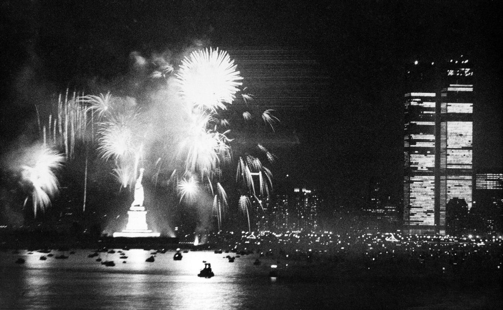

Independence Day Bicentennial Celebration. New York City Harbor. July 4, 1976. Courtesy of the Associated Press.
On the first page of his book And The Band Played On (1987), Randy Shilts recorded this riveting recollection of the scene above:
Tall sails scraped the deep purple night as rockets burst, flared, and flourished red, white, and blue over the stoic Statue of Liberty. The whole world was watching, it seemed; the whole world was there. Ships from fifty-five nations had poured sailors into Manhattan to join the throngs, counted in the millions, who watched the greatest pyrotechnic extravaganza ever mounted, all for America’s 200th birthday party. Deep into the morning, bars all over the city were crammed with sailors. New York City had hosted the greatest party ever known, everybody agreed later. The guests had come from all over the world.
Enough said.